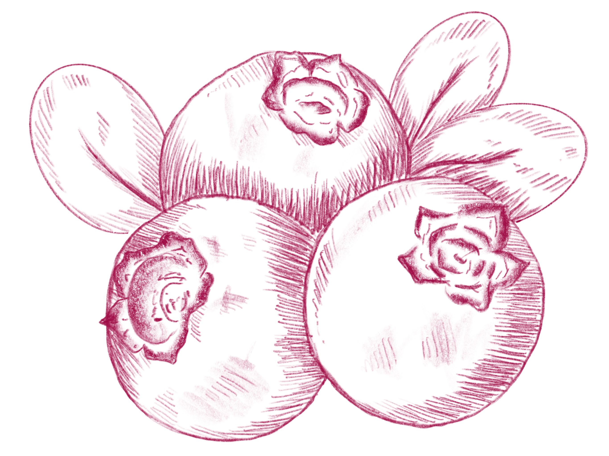

Loving the blueberries? Click here to check out another simple blueberry mocktail!
WINTER BLUES:
RECIPE
INGREDIENTS:
DIRECTIONS:
SERVE:
Garnish with mint leaves and add in a few blueberries. Enjoy Winter Blues with your friends and family during the festive season and holidays!
